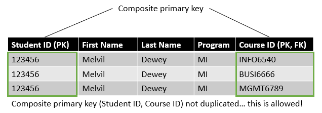
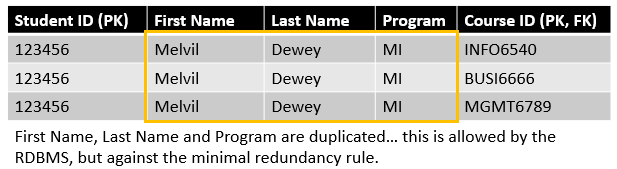

Relational databases (Part 2)
Learning objectives
Concepts
- Relationship types
- Entity-Relationship Diagrams
Practical skills
- Create an Entity-Relationship Diagram (team assignment #2)
- Optimize the structure of your database (team assignment #2)
Relationship types
Relationships are the key determinants of the structure of your database and are represented by foreign keys in some of your tables that are linked to primary keys of other tables. Luckily, relationships are a relatively simple concept that is easy to implement in your database design process. There are only three basic kinds of relationship, so let’s take a quick look at them.
One-to-one relationship
This relationship exist when one record in a table can only assiciated with only one record in another table, and vice versa. A one-to-one relationship may exist, for instance, between the office space and the personnel of an organization, as long as nobody is allowed to share and office, or to have two offices. These relationships are quite rare in reality, since it often makes more sense to bring back to combine tables with one to one relationships in a unique table. However, there are situations where the use of one-to-one relationships can be required or appropriate, for example:
- Security: you may want to store sensitive information about an individual in a different table that only some authorized users can access.
- Semantics: even though you could include information about the office space in your employees table, you might not want to store information about your offices with your employees table. first_name, last_name, eye color are characteristics of people, but building or room_number are not.
One-to-many relationship
One-to-many relationship exists when one record in a table can be associated with one or more records in another table. This is the most frequent type of relationship in properly designed databases. A typical example is the customers table and the orders table, a single customer record can be associated with multiple orders, but only one customer can be associated with a specific order.
Many-to-many relationship
Many-to-many relationship exists when one record in a table can be associated with multiple records in another table and vice versa. A typical example is a product that can be part of multiple orders and an order than can contain multiple products. Another example is the relationship between university courses and students. In the courses table, the record for “Data Management” has an association with 54 records from the students table. Inversely, a single recordin the students table can be associated to multiple records in teh courses table.
Some isssue with many-to-many relationship
These relationships are very frequent in the world, and they are great. But they also rise potential issues that needs to be resolved in your database design. By definition, these relationship imply that the non-duplication of the primary key rule will be violated, so that something that your RDBMS will not allow.

One solution for that is to use a composite primary key, this simply means that your table as 2 or more primary keys instead of a single one. In practice, this means that each primary key is allowed to be repeated in the table, as long as the combination of primary key values does not repeat.

However the composite key solution by itself is often not optimal, since it can create a lot of redundancy in your table which is something that you want to minimize as much as possible.

This is what associative tables are for. They are basically tables create with the specific purpose of linking your subjects together to prevent primary key duplication and minimize redundancy.

Table types
Since the associative table was just introduced, this is probably a good time to go over the three basic types of tables that you will encounter in your database.
- Data tables typically represent the main subjects of your database (e.g., objects, people, events). They usually have a single primary key and they gather data that provides information about the subject represented in the table.
- Associative tables are use to create associations between the subjects in your database (e.g., students-courses, products-orders, customers-orders). They have typically have multiple foreign keys that together will form the composite primary key.
- Validation (or lookup) tables are used for data quality and validation purposed. They contain the list of possible values that a field can take. For instance, your grade for this class have a limited set of possible values (A+, A, A-, B+, B, B-, F, AUD, ILL, INC, IP, P). A validation table can but does not have to be used to store these possible values in order to ensure that a user cannot enter the grade “G” or “Banana” in the grade field of the database.
You will see some of these tables in action in the video below where we will work on the entity-relationship diagram of our GummyBox database.
Entity-relationship diagrams
An entity-relationship diagram (ERD) is simply a visual representation of your database that typically includes every table along with their fields and the relationship between them. The ERD is a useful tool for designing your database because it helps you visualize your table and fields and the relationship between them, which makes it easier to spot mistakes and inconsistencies. It is also a useful tool to include in the database documentation as it can provide users with a good understanding of the data so that they can more effectively use it. There are many tools that you can use to create ERDs (including MySQL workbench). In the video below, I use diagrams.net (formerly draw.io) to draw the following ERD in order to improve and expand the design of my GummyBox database

Getting started with MySQL workbench
MySQL workbench is an open source RDBMS that offers all the features that you will need to design and manage your databases. To install it on your computer:
If your computer’s operating system is Microsoft Windows, choose any of the two recommended Download options.
- If you have an online connection while running the MySQL Installer, choose the mysql-installer-web-community file.
- If you do not have an online connection while running the MySQL Installer, choose the mysql-installer-community file.
You will be asked if you want to sign up for an Oracle web account. You do not need to sign up. Simply click on “No thanks, just start my download” (as show in the image below).

In this next video, I provide a very brief introduction to MySQL workbench, and show you how to get started with creating your database model, making tables, declaring primary and foreign keys, and automatically generate your ERD.
Exercises
As an exercise for this week, you can download the GummyBox ERD that I created with diagrams.net here. Once you downloaded the file, you can open it by going to https://app.diagrams.net, click on File, then Open from… and then select the file you just downloaded. and then:
- See if you can spot the error. (Tip: it is not a critical error as the database would still work fine as it is, but there is at least one unnecessary table in there)
- Try adding the gummy_reviews to the design.
- Try adding the gummy_assortments to the design.